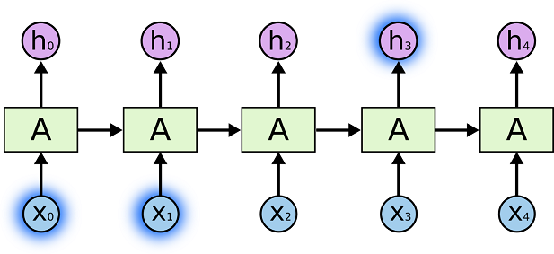
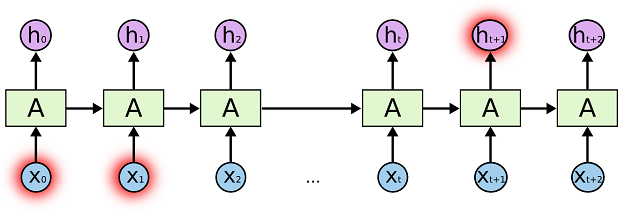

The Problem of Long-Term Dependencies
One of the appeals of RNNs is the idea that they might be able to connect previous information to the present task, such as using previous video frames might inform the understanding of the present frame. If RNNs could do this, they’d be extremely useful. But can they? It depends. For some tasks, we only need to look at recent information. For example, consider a language model trying to predict the next word in a sentence based on the previous words and sentences. If we are trying to predict the last word in “the clouds are in the sky,” we don’t need any previous sentences, – it’s pretty obvious the next word is going to be sky. In such cases, where the gap between the relevant information and the place that it’s needed is small, RNNs can learn to use the past information.

There are also cases where we need more context. Consider trying to predict the last word in the text “I speak fluent French.” Recent information suggests that the next word is probably the name of a language, but if we want to narrow down which language, we need the context the sentence, like a reference to France, from sentences further back. It’s entirely possible for the gap between the relevant information and the point where it is needed to become very large. Unfortunately, as that gap grows, RNNs become unable to learn to connect the information.

In theory, RNNs are absolutely capable of handling such “long-term dependencies.” A human could carefully pick parameters for them to solve toy problems of this form. Sadly, in practice, RNNs don’t seem to be able to learn them. The problem was explored in depth by Hochreiter (1991) [German] and Bengio, et al. (1994), who found some pretty fundamental reasons why it might be difficult. To put it simple, when we train RNN, we will also use backpropagation algorithm to adjust error of the parameters. Let’s take gradient at t=3 as an example, the derivative will look like this:
Don’t worry if you don’t completely follow the above. In RNN, we need to sum up the contributions of each time step to the gradient. In other words, because W is used in every step up to the output we care about, we need to backpropagate gradients from t=3 through the network all the way to t=0 in this case:

Note that this is exactly the same as the standard backpropagation algorithm that we use in deep Feedforward Neural Networks. The key difference is that we sum up the gradients for W across each time step. This should also give you an idea of why standard RNNs are hard to train: Sequences (sentences) can be quite long, perhaps 20 words or more, and thus you need to back-propagate through many layers. It is natural for this error signal to get muddied up by noise and imprecision. In practice many people truncate the backpropagation to a few steps.